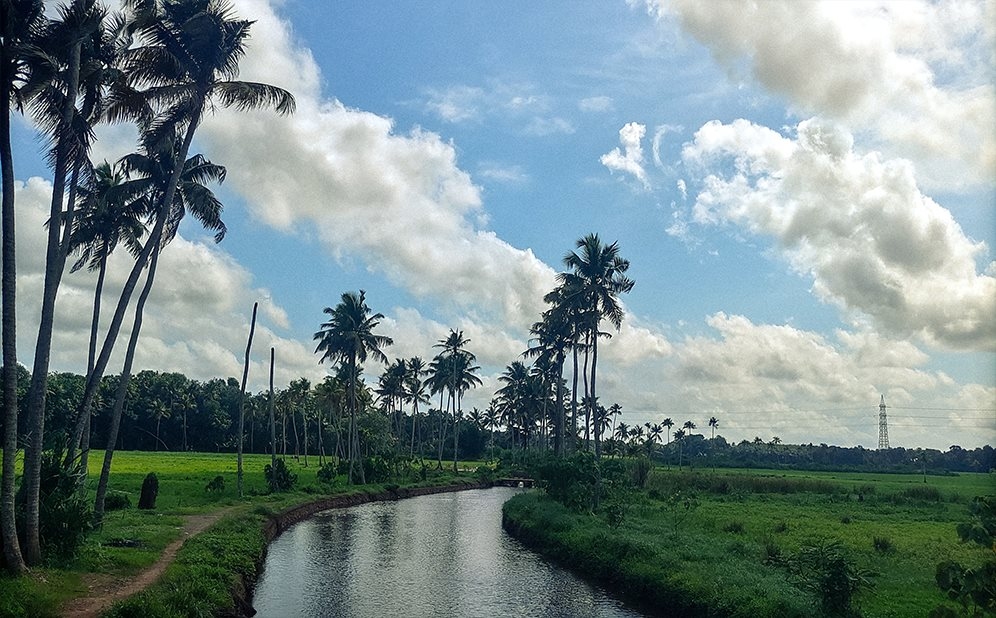
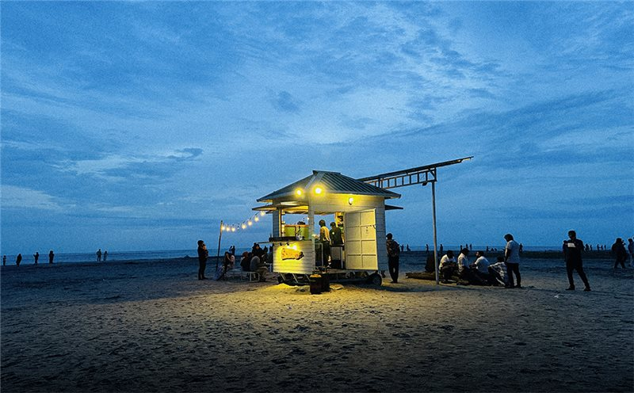
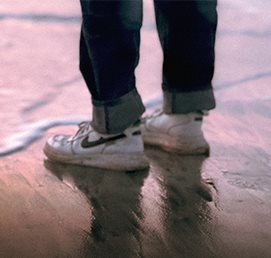
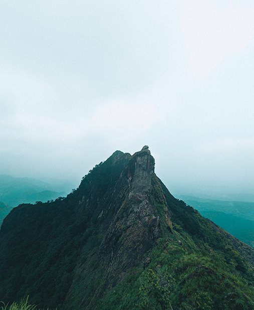

Mobile photography
Everyday light, passing faces, and places that make me pause. Most of my stories start with the phone in my hand.

A COLLECTION OF THINGS THAT MAKE YOU FEEL
Not just how it looked.
How it felt to be there.
01 — A world of green
THE PERSONAL ARCHIVE / NIDHIN NARAYANAN
A few places. A few people. A thousand little feelings.
No frames in this selection. Try another filter.
Drag to browseSelect a cardOpen to look closer


A little collection of your own. Tap ♡ to save your favorites in this browser.
02 / PHOTO SERIES

VIEW THE PHOTOGRAPHS ↗
A PHOTO SERIES / 01
A pink horizon, a glowing beachside building, and the tide finding its way back. Three different ways to pause by the water.
03 FRAMES / COAST & CONNECTION
PHOTOS / DETAILS / A PERSONAL POINT OF VIEW
The photographs I keep, the details behind them, and a few thoughts along the way. Mostly seen through my phone.
Explore my journeyPhotographs, small details, and personal notes.

THE WAY I CREATE
Mostly a phone. Sometimes a camera. Always a little curiosity — from the first frame to the final edit.
Everyday light, passing faces, and places that make me pause. Most of my stories start with the phone in my hand.
A closer look at light and composition. Making room for the quiet details that give a frame its feeling.
Finding the right colour, the right pace, the right feeling. Thoughtful edits that keep the moment at the heart of the frame.

A LITTLE OF HOW I SEE ↗03 / BEHIND THE LENS
I’m a mobile photographer based in Alappuzha, Kerala. Most of my photographs begin on my phone; I also use a camera and edit both photos and video. Nature, coastlines, and everyday life keep me looking closer.
Thanks for seeing a little of the world through my eyes.
Follow the everyday discoveries ↗Nidhin.GOOD STORIES START WITH A HELLO
Mobile photography, camera work, photo or video editing — or just a creative idea. Tell me what you have in mind. Send a message through either profile below.
Take a little
wonder with you.
 the places
the places
 the people
the people

the feeling